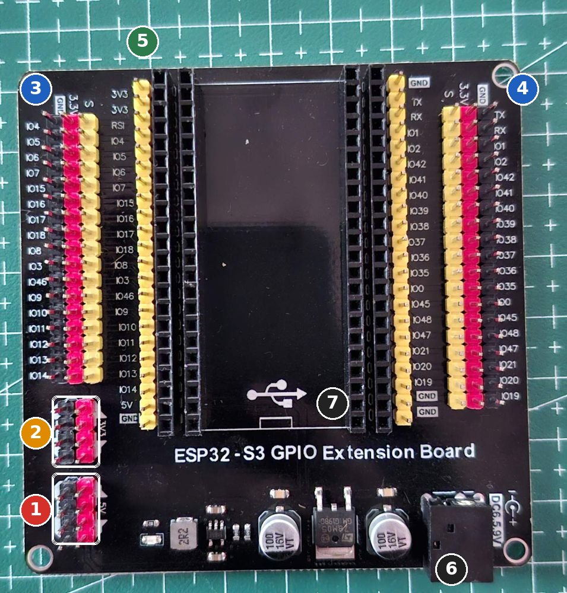
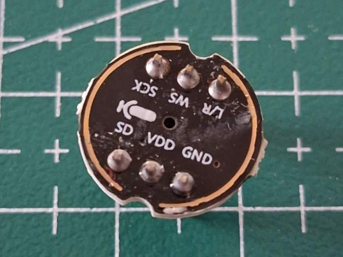

Otak memegang layar sentuh, suara, dan koneksi internet. Setiap modul dites sendiri dulu, lalu otak disambung ke badan.
0 / 0 langkah
Gambaran
Pin otak (ESP32-S3)

1 Blok 5V (merah) dan GND (hitam). Di mode jalan, 5 V dari LM2596 #1 masuk ke sini. Saat USB tercolok, pin 5V papanmu hanya terbaca sekitar 1,5-2,9 V (sudah kamu ukur), jadi jangan memakainya sebagai sumber 5 V di meja.
2 Blok 3V3 dan GND: sumber 3,3 V untuk layar, mikrofon, dan speaker selama di meja.
3 dan 4: tiga kolom untuk tiap GPIO. Kuning = S (sinyal), merah = 3,3 V, hitam = GND. Nama GPIO tercetak di tepi: IO4, IO5, ... IO21.
5 Header kuning lurus di dekat soket: sambungan langsung ke pin S3 apa adanya.
6 Jack DC 6,5-9 V: tidak dipakai. 7 Simbol USB: port USB-C S3 menghadap ke sini saat dipasang.
Bagian
Pin modul
GPIO S3
Bus SPI bersama
SCK / MOSI / MISO
IO12 / IO11 / IO13 lewat breadboard
Layar TFT
CS, DC, RESET
IO10, IO9, IO8
Sentuhan
T_CS
IO14
SD card
SD_CS
IO21
Speaker MAX98357A
BCLK, LRC, DIN
IO4, IO5, IO7
Mikrofon INMP441
SCK, WS, SD
IO15, IO16, IO6
Ke badan
TX, RX
IO17 → D16 DevKit, IO18 ← D17 DevKit
Pin 35-37 (dipakai PSRAM), 19-20 (USB), 0, 3, 45, 46 (pin boot) sengaja tidak dipakai. Hampir semua pin yang dipakai ada di sisi kiri papan.
Langkah
Rakit otak
Semua tahap di bagian ini memakai mode meja: S3 dapat daya dari USB, modul-modul dari blok 3V3.
Kenapa begitu? Layar, sentuhan, dan SD memakai tiga kabel yang sama (SCK, MOSI, MISO). ESP32 memilih siapa yang diajak bicara dengan menurunkan pin CS milik perangkat itu. Itulah kenapa tiap perangkat punya kabel CS sendiri.
Berhasil kalau
Layar menampilkan "Layar berhasil!", dan setelah kalibrasi, titik kuning mengikuti jarimu.
Kalau tidak berhasil
Layar putih saja: RESET, DC, atau CS belum tersambung, atau SCK/MOSI tertukar.
Warna terbalik (hitam jadi putih): di kode, ubah c.invert = false menjadi true. Merah dan biru tertukar: ubah c.rgb_order.
Gambar bergeser atau bergaris: kabel SPI terlalu panjang. Pakai kabel 10-20 cm, atau turunkan freq_write ke 20000000.
Sentuhan tidak merespons: cek T_CS ke IO14 dan T_DO ke kolom 8.
Tahap 3
SD card di belakang layar
Kartu SD ukuran penuh (SanDisk 32 GB-mu)Pin header 4 pin + solderKabel F-M
// TES SPEAKER: bunyi nada naik-turun lewat MAX98357A. Tanpa library tambahan.
#include <ESP_I2S.h>
#define AMP_BCLK 4
#define AMP_LRC 5
#define AMP_DIN 7
I2SClass amp;
const int RATE = 16000;
void nada(float hz, int ms, float keras = 0.25) {
int16_t buf[256];
int total = RATE * ms / 1000;
static float fase = 0;
for (int n = 0; n < total; n += 128) {
for (int i = 0; i < 128; i++) {
int16_t v = (int16_t)(sin(fase) * 32767 * keras);
fase += 2 * PI * hz / RATE; if (fase > 2 * PI) fase -= 2 * PI;
buf[i * 2] = v; buf[i * 2 + 1] = v; // kiri dan kanan sama
}
amp.write((uint8_t*)buf, sizeof(buf));
}
}
void setup() {
Serial.begin(115200);
amp.setPins(AMP_BCLK, AMP_LRC, AMP_DIN);
if (!amp.begin(I2S_MODE_STD, RATE, I2S_DATA_BIT_WIDTH_16BIT, I2S_SLOT_MODE_STEREO)) Serial.println("I2S gagal");
}
void loop() {
Serial.println("do re mi fa sol");
float not_[] = {523, 587, 659, 698, 784};
for (float f : not_) nada(f, 300);
nada(0, 1000, 0); // diam 1 detik
}
Kenapa begitu? MAX98357A menerima suara digital (I2S) dan langsung menguatkannya ke speaker. Pin GAIN kosong = penguatan 9 dB, pin SD kosong = menyala. Di robot jadi, Vin dipindah ke 5 V supaya lebih keras.
Berhasil kalau
Terdengar do-re-mi-fa-sol lalu diam sedetik, berulang.
Kalau tidak berhasil
Diam: cek BCLK/LRC/DIN tidak tertukar dan kabel speaker terjepit kuat di terminal (bukan isolasinya yang terjepit).
Bunyi kresek: kabel GND kurang kuat, atau kabel data terlalu panjang.
Tahap 5
Mikrofon INMP441
INMP441Pin header + solderKabel F-M dan F-F

INMP441 milikmu: SCK, WS, L/R di satu sisi, SD, VDD, GND di sisi lain.
// TES MIKROFON: tampilkan kerasnya suara. Buka Tools > Serial Plotter, lalu tepuk tangan.
#include <ESP_I2S.h>
#define MIC_SCK 15
#define MIC_WS 16
#define MIC_SD 6
I2SClass mic;
void setup() {
Serial.begin(115200);
mic.setPins(MIC_SCK, MIC_WS, -1, MIC_SD);
if (!mic.begin(I2S_MODE_STD, 16000, I2S_DATA_BIT_WIDTH_32BIT, I2S_SLOT_MODE_MONO, I2S_STD_SLOT_LEFT))
Serial.println("Mikrofon gagal mulai");
}
void loop() {
int32_t buf[512];
size_t n = mic.readBytes((char*)buf, sizeof(buf)) / 4;
if (n == 0) return;
double jumlah = 0;
for (size_t i = 0; i < n; i++) { double v = buf[i] >> 14; jumlah += v * v; }
int keras = sqrt(jumlah / n);
Serial.printf("keras:%d\n", keras); // diam: puluhan sampai ratusan, tepuk: ribuan
}
Kenapa begitu? L/R ke GND membuat mikrofon mengirim suara di jalur kiri. Kode membaca jalur kiri saja. Mikrofon dan speaker memakai dua jalur I2S terpisah, jadi bisa diatur sendiri-sendiri.
Berhasil kalau
Garis di Serial Plotter rendah saat diam (puluhan sampai ratusan) dan melonjak ke ribuan saat kamu tepuk tangan atau bicara.
Kalau tidak berhasil
Selalu 0: SD dan WS tertukar, atau L/R tidak ke GND.
// TES SAMBUNGAN OTAK-BADAN (upload ke ESP32-S3; badan sudah berisi robot_badan.ino)
// Ketik perintah di Serial Monitor S3, misalnya PING atau M 150 150 800, lalu Enter.
#define BADAN_TX 17
#define BADAN_RX 18
void setup() {
Serial.begin(115200);
Serial1.begin(115200, SERIAL_8N1, BADAN_RX, BADAN_TX);
delay(500);
Serial.println("Mengirim PING ke badan...");
Serial1.println("PING");
}
void loop() {
while (Serial.available()) Serial1.write(Serial.read()); // dari laptop ke badan
static String baris;
while (Serial1.available()) { // dari badan ke laptop
char c = Serial1.read();
if (c == '\n') {
if (!baris.startsWith("D ") || millis() % 2000 < 260) Serial.println("badan: " + baris); // data D dicetak jarang
baris = "";
} else if (c != '\r') baris += c;
}
}
Berhasil kalau
Muncul badan: PONG dan baris data badan: D .... Perintah M menggerakkan roda.
Kalau tidak berhasil
Tidak ada balasan: TX-RX tidak disilang, GND belum disambung, atau badan belum berisi robot_badan.ino.
Huruf aneh: kedua board harus 115200 (sudah di kode).